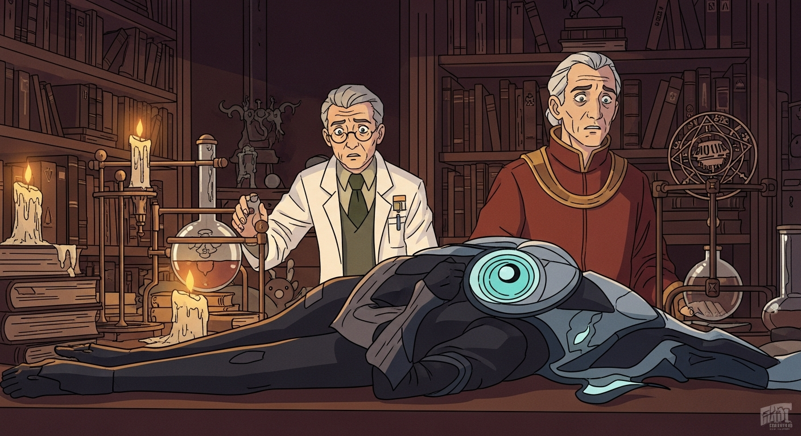
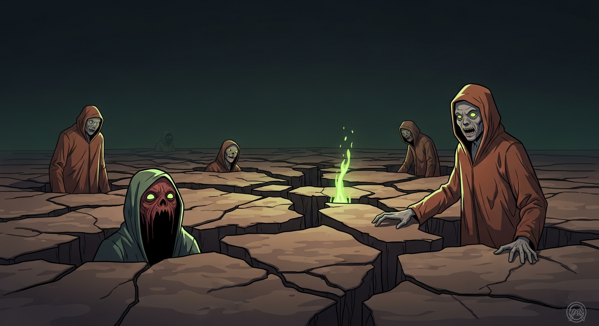

Agrippa, Dee, and I gathered. Shadows danced as holographic texts flickered: *Picatrix*, *Invisibilia Dei*, even *Evil Dead*. We were about to invoke the elements. Agrippa eyed me warily. "Are you sure about this reading, Sledge? Tradition isn't a buffet, you know."

Dee chanted from the *Picatrix*, symbols resonating with a power I only intellectually understood. Alexander's devices hummed, drawing energy from the books. The room shuddered. It wasn't working *as expected*. The elements weren't servants. They were forces, and our understanding, I realized, was laughably incomplete. Tradition isn't mastery.